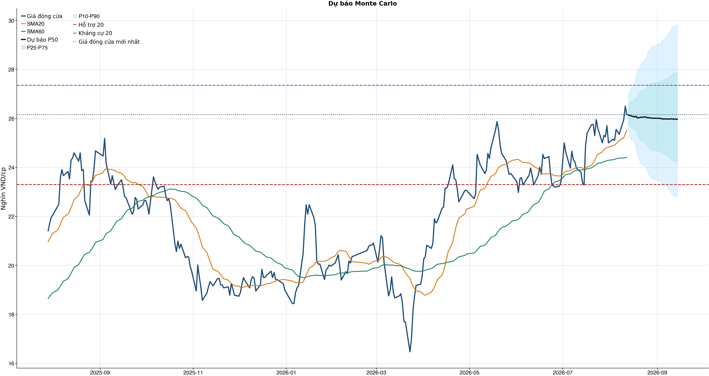
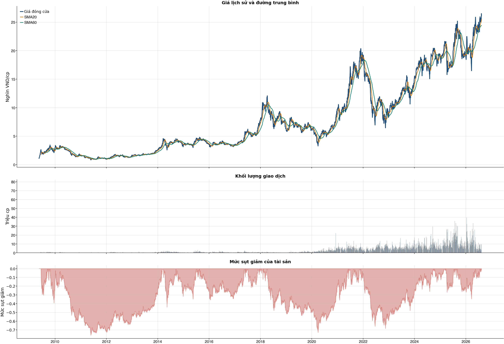

Chưa có edge 5D đủ để giao dịch
Swing fixed-horizon 5D chưa đủ bằng chứng: frozen holdout 0/10 trade; không dùng classifier 1D hay sensitivity legacy để quyết định.
Kết quả chính
KPI đọc nhanh trước, chi tiết bấm mở bên dướiDiagnostic legacy 1D: chi phí & vòng lệnh
Chỉ để audit turnover, không tham gia quyết định swing 5DKhuyến nghị theo fixed-horizon swing 5DINSUFFICIENT_EDGE
| Lệnh mới hôm nay | 0 lệnh | Không DCA hoặc chia nhỏ lệnh khi fixed-horizon swing chưa qua publish gate. |
| Trạng thái edge 5D | INSUFFICIENT_EDGE | Swing fixed-horizon 5D chưa đủ bằng chứng: frozen holdout 0/10 trade; không dùng classifier 1D hay sensitivity legacy để quyết định. |
| Nếu chưa có cổ phiếu | INSUFFICIENT_EDGE | Swing fixed-horizon 5D chưa đủ bằng chứng: frozen holdout 0/10 trade; không dùng classifier 1D hay sensitivity legacy để quyết định. |
| Nếu đang nắm giữ | HOLD_DISCIPLINED | Nếu đã nắm giữ: giữ theo stop-loss, không mua thêm khi swing 5D chưa đủ edge. |
| Expected excess return 5D | +0.1% | Cần vượt chi phí + margin 1.0%. |
| Mẫu frozen holdout | 0/10 trade | Chưa đủ số trade thì không có kết luận lợi nhuận/Sharpe và không được trade live. |
| Kỹ thuật / tin | 4 điểm | Hồi phục / nghiêng tăng; news warning: không. |
Classifier next-day và bảng sensitivity legacy không tham gia quyết định này. Mua mới chỉ được xét khi swing 5D có sample đủ lớn, ranking edge dương, frozen holdout/stress phí đạt và expected excess return vượt chi phí + margin.
Chiến lược swing 5 phiên: frozen holdout & T+2stateful cash → long → cash
| Target / execution | 5 phiên | signal after close[t]; enter open[t+1]; exit close[t+5] ; target is stock return minus VNINDEX return over the same window |
| Frozen holdout sample | 0/10 trade | Nếu chưa đủ trade, net/Sharpe là inconclusive chứ không phải return bằng 0. |
| Nắm giữ / T+2 | N/A phiên | Tối thiểu 2 phiên trước khi bán. |
| Ranking edge frozen | Không đạt | Correlation dự báo-excess return phải dương trên frozen holdout. |
| Stress phí 1.5x | Không đạt | Điều kiện bắt buộc trước khi chiến lược được publish-ready. |
| Publish gate | CHƯA ĐẠT | Frozen holdout không được dùng để chọn margin/boosting rounds. |
Chiến lược này không dùng top-N hay threshold tối ưu trên OOS. Margin được chọn trong validation của từng fold; frozen holdout chỉ dùng một lần để kiểm định. Stop-loss không được giả định vượt qua ràng buộc chứng khoán chưa về.
Phụ lục legacy 1D — Kiểm thử kịch bản lịch sử (không phải khuyến nghị giao dịch)nghiên cứu OOS · research-only
| Kịch bản | Cách chọn | Vòng | Gross trước phí | Phí | Net sau phí | Sharpe | Ghi chú |
|---|---|---|---|---|---|---|---|
| Gốc | Ngưỡng gốc ≥ 0.55 | 61 | +18.3% | 30.3% | -12.6% | -0.34 | Baseline lịch sử để đo turnover/phí; không phải số lệnh khuyến nghị. |
| Ngưỡng 0.58 | Chỉ vào lệnh khi xác suất ≥ 0.58 | 38 | +18.1% | 18.9% | -2.2% | -0.02 | Kịch bản nghiên cứu; cần xác nhận trên holdout/future trước khi dùng làm rule. |
| Ngưỡng 0.60 | Chỉ vào lệnh khi xác suất ≥ 0.60 | 31 | +16.6% | 15.4% | +0.0% | 0.05 | Kịch bản nghiên cứu; cần xác nhận trên holdout/future trước khi dùng làm rule. |
| Ngưỡng 0.62 | Chỉ vào lệnh khi xác suất ≥ 0.62 | 20 | +17.9% | 10.0% | +6.8% | 0.30 | Kịch bản nghiên cứu; cần xác nhận trên holdout/future trước khi dùng làm rule. |
| Giới hạn 10 vòng | Tối đa 10 vòng, ưu tiên xác suất cao hơn | 10 | +11.6% | 5.0% | +6.2% | 0.41 | Ngưỡng trong nhóm: 66.3%. Không dùng làm rule vì chọn số vòng sau khi đã thấy OOS. |
| Giới hạn 5 vòng | Tối đa 5 vòng, ưu tiên xác suất cao hơn | 5 | +13.0% | 2.5% | +10.2% | 0.70 | Ngưỡng trong nhóm: 69.0%. Không dùng làm rule vì chọn số vòng sau khi đã thấy OOS. |
| Giới hạn 1 vòng | Tối đa 1 vòng, ưu tiên xác suất cao hơn | 1 | +6.1% | 0.5% | +5.6% | 0.60 | Ngưỡng trong nhóm: 75.2%. Không dùng làm rule vì chọn số vòng sau khi đã thấy OOS. |
Không dùng bảng này để chọn “1 lệnh” hay DCA. Baseline 61 vòng chỉ để đo turnover/phí. Các dòng threshold là ứng viên nghiên cứu cần holdout/future đã khóa; các dòng 10/5/1 có selection bias vì số vòng được chọn sau khi đã thấy OOS. Khi signal chưa ACTIONABLE, lệnh mới hôm nay luôn là 0.
Breakdown legacy 1D trước phí / sau phívì sao gross dương nhưng net âm
| Kịch bản trước chi phí | +18.3% | Gross PnL 18,289,135 VND; chưa trừ commission/slippage/tax. |
| Chi phí giao dịch | -30.3% | 61 vòng; entry 20.0 bps + exit 30.0 bps = 50.0 bps/vòng; tổng phí 28,355,115 VND. |
| Kịch bản sau chi phí | -12.6% | Net PnL -12,580,115 VND; gross - cost gap khoảng +30.9%. |
| Ngưỡng phí hòa vốn | 30.2 bps/vòng | Phí hiện tại 50.0 bps/vòng; cao hơn ngưỡng này thì gross dương vẫn có thể thành net âm. |
| Kết luận hành động | CHƯA CÓ LỢI THẾ (NO_EDGE) | Không mở vị thế mới; nếu đang giữ thì xem khung HOLD/REDUCE/SELL riêng theo model health, kỹ thuật, tin và stop-loss. |
| Cách cải thiện cần test | Giảm turnover | Hiện có 61 phiên active/61 vòng; nên test threshold 0.58/0.60/0.62 hoặc giữ nhiều phiên hơn. |
Diagnostic legacy 1D: kiểm thử ngoài mẫu sau chi phí61 vòng
| Lợi nhuận ròng | -12.6% | 702 quan sát ngoài mẫu |
| Sharpe | -0.34 | Sau chi phí |
| Mức sụt giảm tối đa | -20.4% | 61 vòng giao dịch |
| Chi phí giả định | 50.0 bps | Một vòng mua và bán |
So sánh mô hìnhXGBoost vs Logistic
| XGBoost | 0.518 | AUC 0.558 |
| Logistic | 0.519 | AUC 0.563 |
| Đa số | 0.500 | Mốc so sánh |
Mức độ quan trọng của đặc trưngtop feature
| volatility_20d | 13.74 | Mức đóng góp |
| macd_pct | 12.47 | Mức đóng góp |
| return_1d | 11.38 | Mức đóng góp |
| corr_60d | 11.30 | Mức đóng góp |
| market_return_1d | 10.80 | Mức đóng góp |
| return_20d | 10.52 | Mức đóng góp |
| macd_hist_pct | 10.40 | Mức đóng góp |
| month_of_year | 10.39 | Mức đóng góp |
Điều kiện phát hành tín hiệuCHƯA CÓ LỢI THẾ (NO_EDGE)
| Có artifact swing fixed-horizon | ĐẠT | Điều kiện phát hành tín hiệu |
| Margin được chọn hợp lệ trong validation | KHÔNG ĐẠT | Điều kiện phát hành tín hiệu |
| Development OOS đủ số trade | KHÔNG ĐẠT | Điều kiện phát hành tín hiệu |
| Swing qua frozen holdout và stress phí | KHÔNG ĐẠT | Điều kiện phát hành tín hiệu |
| Ranking edge dương trên development OOS | KHÔNG ĐẠT | Điều kiện phát hành tín hiệu |
| Ranking edge dương trên frozen holdout | KHÔNG ĐẠT | Điều kiện phát hành tín hiệu |
| Frozen holdout có lợi thế ròng sau phí | KHÔNG ĐẠT | Điều kiện phát hành tín hiệu |
| Frozen holdout chịu được stress phí 1.5x | KHÔNG ĐẠT | Điều kiện phát hành tín hiệu |
| Expected excess return swing vượt chi phí + margin | KHÔNG ĐẠT | Điều kiện phát hành tín hiệu |
| Bối cảnh kỹ thuật đạt ngưỡng | ĐẠT | Điều kiện phát hành tín hiệu |
| Tỷ lệ lợi nhuận/rủi ro đạt ngưỡng | ĐẠT | Điều kiện phát hành tín hiệu |
| Dữ liệu còn mới | ĐẠT | Điều kiện phát hành tín hiệu |
| Có khối lượng vị thế hợp lệ | ĐẠT | Điều kiện phát hành tín hiệu |
Quản trị rủi rostop / target
| Rủi ro/lệnh | 1.0% | 1,000,000 VND |
| Mức dừng lỗ | 24.88 | Rủi ro mỗi cổ phiếu 1.40 |
| Mục tiêu 1 | 29.82 | Lợi nhuận/rủi ro 2.52 |
| Mục tiêu 2 | 29.82 | Dự báo/kháng cự |
Kỹ thuật
Biểu đồ mở sẵn, bảng tín hiệu thu gọnBiểu đồ kỹ thuật

Tín hiệu kỹ thuậtchi tiết
| Xu hướng | Tích cực | Giá nằm trên SMA20 và SMA60. |
| MACD | Tích cực | MACD trên signal, histogram dương. |
| RSI14 | Tích cực | RSI 59.9. |
| Bollinger | Ổn định | Giá nằm trong dải Bollinger. |
| ADX | Đi ngang | ADX 15.4. |
| Thanh khoản | Thấp | 0.59 lần trung bình. |
| Stochastic | Yếu lại | %K nằm dưới %D. |
Cơ bản & tin tức
Các bảng dài để trong nút bungPhân tích cơ bảnBCTC/tỷ số
| P/E | 20.17 | 2026-Q2 |
| P/B | 2.06 | 2026-Q2 |
| P/S | 6.21 | 2026-Q2 |
| ROE | 9.8% | 2026-Q2 |
| ROA | 3.1% | 2026-Q2 |
| Gross margin | 38.0% | 2026-Q2 |
| Net margin | 23.0% | 2026-Q2 |
| Debt/Equity | 1.82 | 2026-Q2 |
| Current ratio | 1.54 | 2026-Q2 |
| NPL | 0.0% | 2026-Q2 |
| Dividend yield | 0.0% | 2026-Q2 |
| Market cap | 35,773.6 tỷ | 2026-Q2 |
| Revenue Growth | 15.1% | 2026-Q2 YoY |
| Profit Growth | 42.0% | 2026-Q2 YoY |
| Dòng tiền từ HĐKD | 317.7 tỷ | 2026-Q2 |
| CAPEX | -2.3 tỷ | 2026-Q2 |
| Lợi nhuận sau thuế | 273.2 tỷ | 2026-Q2 |
| Lợi nhuận hoạt động | 340.5 tỷ | 2026-Q2 |
| Tiền và tương đương tiền | 2,202.4 tỷ | 2026-Q2 |
| Vay ngắn hạn | 26,093.2 tỷ | 2026-Q2 |
| Vay dài hạn | 0.0 tỷ | 2026-Q2 |
| Tổng tài sản | 41,258.9 tỷ | 2026-Q2 |
| Tổng nợ phải trả | 26,619.1 tỷ | 2026-Q2 |
| Vốn chủ sở hữu | 14,639.8 tỷ | 2026-Q2 |
| Khoản phải thu | 313.9 tỷ | 2026-Q2 |
| Dòng tiền tự do (CFO - CAPEX) | 315.4 tỷ | 2026-Q2 |
| CFO / Lợi nhuận sau thuế | 1.16 | 2026-Q2 |
| Nợ vay ròng | 23,890.8 tỷ | 2026-Q2 |
| Nợ vay / Vốn chủ sở hữu | 1.78 | 2026-Q2 |
| Phải thu / Tổng tài sản | 0.8% | 2026-Q2 |
Tin tức doanh nghiệpresearch only
| Trạng thái | Có dữ liệu | research_only |
| Nguồn / số bài | VCI | 50 |
| Bài đủ timestamp | 50 | Chỉ các bài này mới được phép dùng point-in-time |
| Sentiment 5 ngày | 0.00 | 3.0 bài trước cutoff |
| Phương pháp | keyword_heuristic_v1 | Research only; chưa dùng làm tín hiệu mua/bán |
Dự báo
Kịch bản giá và lịch sử drawdownDự báo ngắn hạn20 phiên
| 2026-08-13 | 26.13 | P10 25.52 / P90 26.89 |
| 2026-08-14 | 26.12 | P10 25.16 / P90 27.16 |
| 2026-08-17 | 26.06 | P10 25.05 / P90 27.41 |
| 2026-08-18 | 26.09 | P10 24.76 / P90 27.67 |
| 2026-08-19 | 26.02 | P10 24.52 / P90 28.01 |
| 2026-08-20 | 26.03 | P10 24.34 / P90 28.03 |
| 2026-08-21 | 26.04 | P10 24.15 / P90 28.22 |
| 2026-08-24 | 26.06 | P10 24.02 / P90 28.40 |
Lịch giao dịch Việt Nam dùng cho forecastkhông tính T7/CN/lễ
VN stock calendar: loại Thứ Bảy/Chủ Nhật và các ngày nghỉ 2026 đã công bố; ngày làm bù Thứ Bảy không được tính là phiên giao dịch chứng khoán.
Ngày nghỉ đã loại: 2026-01-01, 2026-01-02, 2026-02-16, 2026-02-17, 2026-02-18, 2026-02-19, 2026-02-20, 2026-04-27, 2026-04-30, 2026-05-01, 2026-08-31, 2026-09-01, 2026-09-02
Nếu HOSE/HNX/UPCoM công bố nghỉ đột xuất, cần thêm ngày đó vào config `market_holidays` rồi chạy lại report.
Biểu đồ dự báo

Lịch sử giá và mức sụt giảm

Báo cáo dùng để học tập và lập kịch bản, không phải khuyến nghị mua/bán.